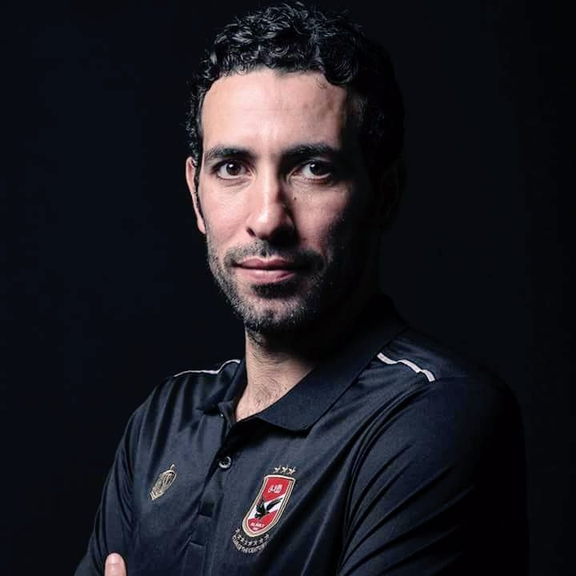

Mazen.info
Liverpool
Liverpool Page
The official home of the Liverpool FC first team Discover profiles qimages and videos featuring all of your LFC players Liverpool Football Club is a professional football club based in Liverpool, England, that competes in the Premier League, the top tier of English football.
Mazen.info

Mohamed Abotrika
Abotrika Page
Mohamed Aboutrika born 7 November 1978 is a retired Egyptian footballer. He was a second striker and attacking midfielder for two teams in Egypt, Tersana and El Ahly. He played for Baniyas in the United Arab Emirates.
Mohamed.info
Salah
Mohamed.info